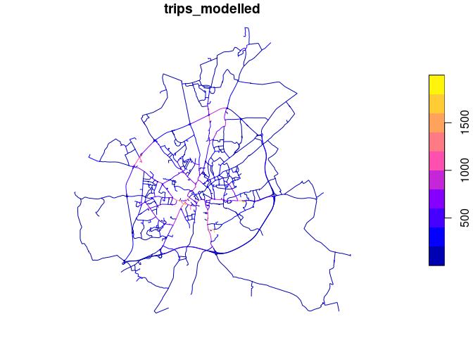

The input of the network generation approaches demonstrated in this repo is origin-destionation data. There are many sources of OD data, see odgen for a way to generate synthetic OD data that we’ll use in the reproducible code below.
Data import and visualisation
It’s worth importing and visualising the OD datasets before routing and network generation stages.
od = read_csv("res_output.csv")
head(od)# A tibble: 6 × 3
O D trips_modelled
<chr> <dbl> <dbl>
1 E01013335 121266 6.37
2 E01013336 121266 3.26
3 E01013337 121266 4.57
4 E01013338 121266 6.46
5 E01013339 121266 2.95
6 E01013340 121266 0.124
od_geo = sf::read_sf("res_output.geojson")
od_geo |>
ggplot() +
geom_sf(aes(alpha = trips_modelled))
od2net
Building on code in the od2net and nptscot/od2net-tests repos, the code below prepares the input datasets and runs the network-generation code, generating output.geojson and output.pmtiles outputs:
source("R/setup.R")
make_zones("input/zones_york.geojson")
make_osm()
make_origins()
make_elevation()
destinations = destinations_york # Provided in the R package
names(destinations)[1] = "name"
destinations = destinations[1]
class(destinations$name) = "character"
sf::write_sf(destinations, "input/destinations.geojson", delete_dsn = TRUE)
# Save the OD dataset:
od = od_geo |>
sf::st_drop_geometry() |>
transmute(from = O, to = as.character(D), count = round(trips_modelled))
readr::write_csv(od, "input/od.csv", quote = "all")Run the tool with Docker as follows:
# On Linux:
sudo docker run -v $(pwd):/app ghcr.io/urban-analytics-technology-platform/od2net:main /app/config.json
# or in Windows:
sudo docker run -v ${pwd}:/app ghcr.io/urban-analytics-technology-platform/od2net:main /app/config.jsonAfter that you should see the following in the output folder:
fs::dir_tree("output")An advantage of od2net is that it can generate the network and routes in a single step. For other approaches, we need to calculate the routes first, as shown below.
Routing
There are many ways to calculate routes. The simplest in many cases will be to calculate them with a routing engine. Let’s do that with interfaces to the OSRM routing engine in the first instance. Note: if you use the od2net approach, you can do the routing and network generation stage in a single step, see below for more on that.
OSRM: basic
od_geo_top_100 = od_geo |>
slice_max(trips_modelled, n = 100)
routes_osrm_minimal = stplanr::route(
l = od_geo_top_100,
route_fun = stplanr::route_osrm,
osrm.profile = "foot"
)
routes_osrm_minimal |>
ggplot() +
geom_sf(alpha = 0.3, size = 9)
Locally hosted OSRM
We can spin-up a local OSRM server to calculate routes as follows:
location = osmextract::oe_match(
od_geo_top_100 |> sf::st_union()
)
osmextract::oe_download(
location$url,
file_basename = "osm.pbf",
download_directory = "."
)Then with the system shell:
docker run -t -v "${PWD}:/data" ghcr.io/project-osrm/osrm-backend osrm-extract -p /opt/car.lua /data/geofabrik_osm.pbf || echo "osrm-extract failed"
docker run -t -v "${PWD}:/data" ghcr.io/project-osrm/osrm-backend osrm-extract -p /opt/car.lua /data/geofrabik_osm.osm.pbf || echo "osrm-extract failed"That should generate something like:
[2024-08-27T15:00:31.786775132] [info] Expansion: 766813 nodes/sec and 382310 edges/sec
[2024-08-27T15:00:31.786776903] [info] To prepare the data for routing, run: ./osrm-contract "/data/geofabrik_osm"
[2024-08-27T15:00:31.836550204] [info] RAM: peak bytes used: 532934656Note the process used 532934656 bytes (532.9 MB) of RAM.
Then:
docker run -t -v "${PWD}:/data" ghcr.io/project-osrm/osrm-backend osrm-partition /data/geofabrik_osm.osrm || echo "osrm-partition failed"
docker run -t -v "${PWD}:/data" ghcr.io/project-osrm/osrm-backend osrm-customize /data/geofabrik_osm.osrm || echo "osrm-customize failed"
docker run -t -i -p 5000:5000 -v "${PWD}:/data" ghcr.io/project-osrm/osrm-backend osrm-routed --algorithm mld /data/geofabrik_osmCheck it is alive as follows:
system('curl "http://127.0.0.1:5000/route/v1/driving/13.388860,52.517037;13.385983,52.496891?steps=true"')Now we can run all the routes:
routes_osrm_2 = stplanr::route(
l = od_geo,
route_fun = stplanr::route_osrm,
osrm.profile = "foot",
osrm.server = "http://127.0.0.1:5000/"
)
sf::write_sf(routes_osrm_2, "routes_osrm_2.geojson", delete_dsn = TRUE)
system("gh release upload v0.1.0 routes_osrm_2.geojson")Let’s visualise the routes:
routes_osrm_2 |>
ggplot() +
geom_sf(alpha = 0.3, size = 9)
Network generation
Overline
The overline() function in the R package stplanr is one way to to generate route networks:
names(routes_osrm_2)
rnet = stplanr::overline(routes_osrm_2, attrib = "trips_modelled")
plot(rnet)
A disadvantage of this approach is that it’s computational resource-intensive and takes a long time. An in-progress is od2net.